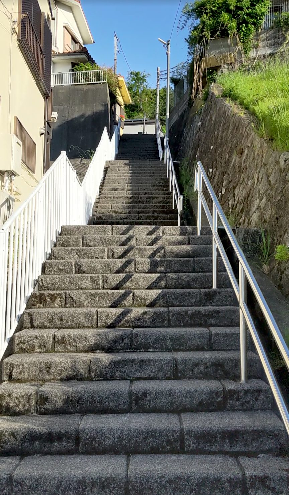
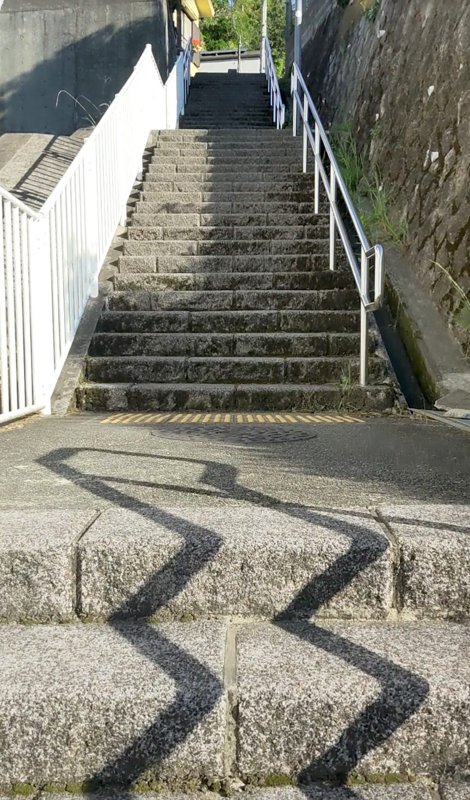
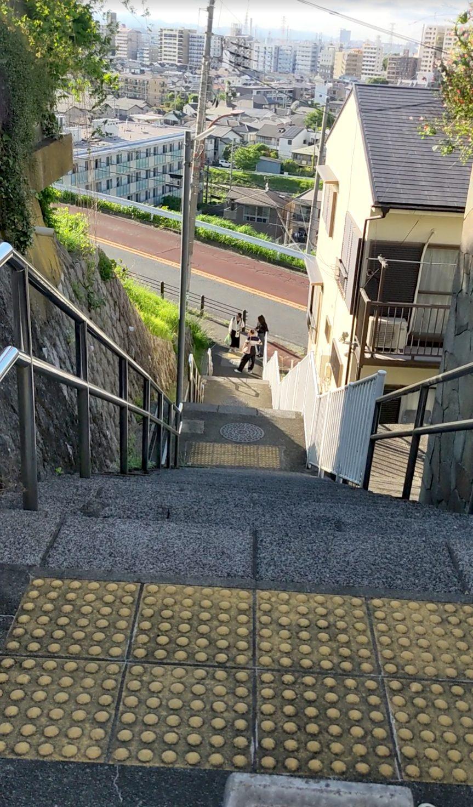

「耳をすませば」の聖地として知られる東京都多摩市桜ケ丘のいろは坂エリア。その1〜3に続いて、59段の「その4」も登ってきました。京王線の聖蹟桜ヶ丘駅から徒歩約10分。住宅の脇にひっそりと存在するこの石段は、いろは坂を歩いていてもつい見逃してしまいそうな場所にあります。ですが一度目に入ると、その清潔感と手すりの白さが印象的な、映えスポットとしての魅力を持った階段です。
京王線「聖蹟桜ヶ丘駅」下車、徒歩約10分。いろは坂エリアを歩きながら探してみてください。その1〜3とあわせてエリアをめぐる流れで訪れるのがおすすめです。
住宅のすぐ脇にある石段のため、近隣への配慮を忘れずに静かに通行してください。歩きやすい靴で訪れましょう。
いろは坂を歩いていると、住宅の脇にふいと石段が現れます。周囲の景色に溶け込んでいて、意識しないと通り過ぎてしまいそうな控えめな存在感です。でも立ち止まってよく見ると、石段の色に対して手すりが真っ白（または銀色）で、そのコントラストが目を引きます。木の枝や落ち葉も見当たらず、非常に清潔に保たれた印象で、思わず「映えそうだな」と感じました。

実際に登ってみると、石段は見た目通りの質感です。岩っぽいテクスチャーはありますが、足を置く面はしっかり平らに仕上げられていて、思いのほか登りやすい。ゴツゴツした見た目とは裏腹に、足元が安定していて歩きやすかったです。

いろは坂エリアの4つの階段の中でも、この「その4」はひときわ目立たない場所にあります。それが逆に、知っている人だけが立ち寄れる隠れスポットのような雰囲気をつくっています。白い手すりと石段のコントラストを狙った写真は、なかなか絵になります。いろは坂を歩く際はぜひ見逃さずに立ち寄ってみてください。
